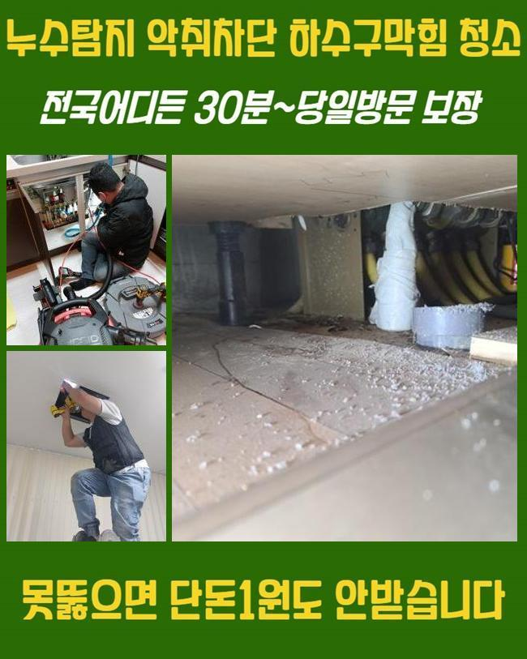
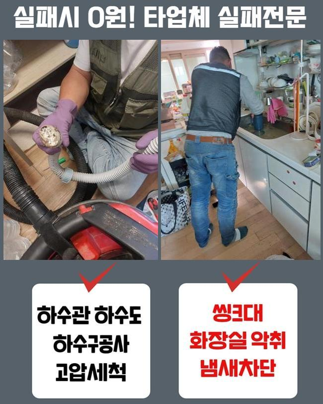
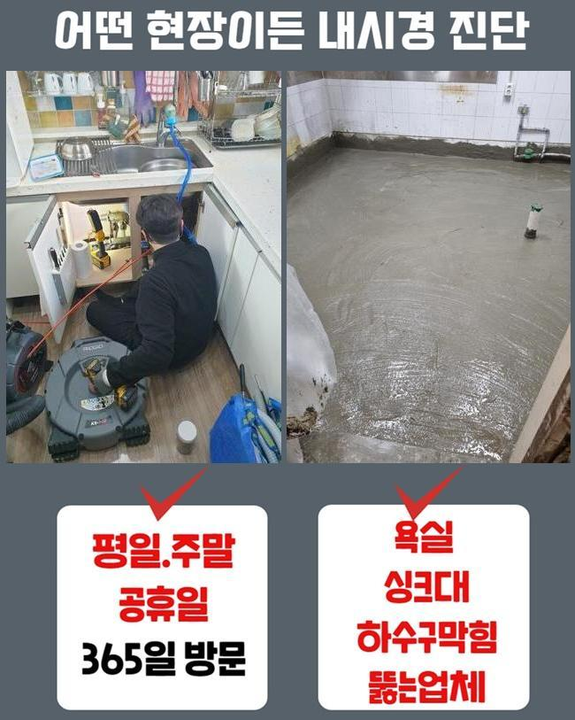
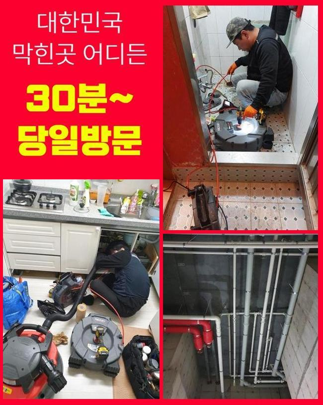
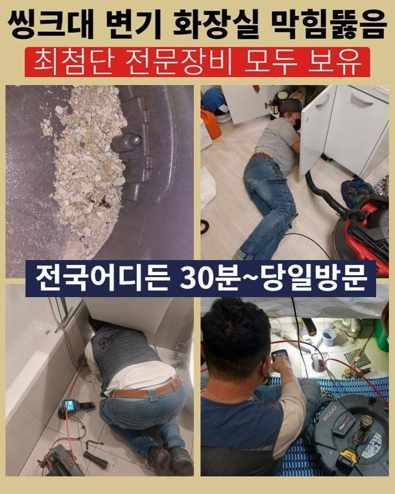
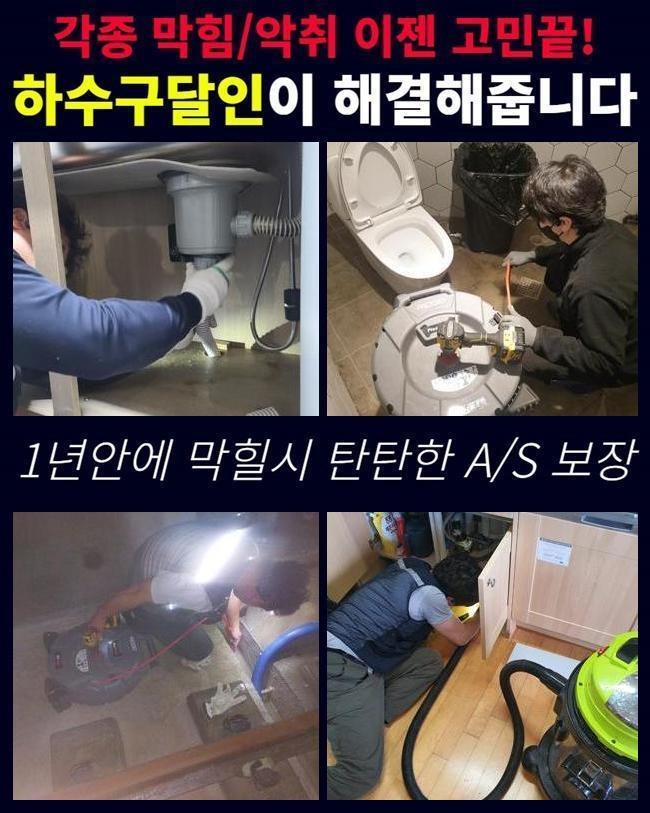
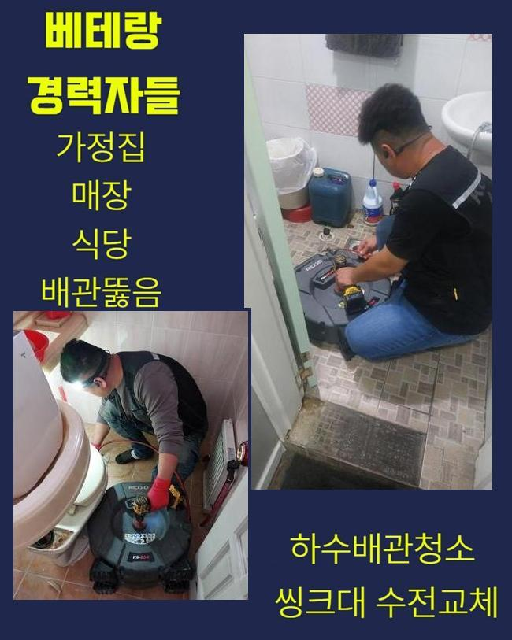

🏠 천안 성성동변기역류 입장면 오수맨홀청소 설비출장
천안 입장면 변기막힘 전문 시공 후기

📋 작업 개요
- 위치: 천안 입장면, 입장면, 천안
- 서비스 유형: 변기막힘, 하수구막힘, 배관막힘, 맨홀막힘, 역류해결, 배관청소, 설비공사
- 작업 일시: 2024. 11. 20. 22:00
- 업체명: 하수구수사대 (010-5615-2118)
🔍 문제 상황
천안 성성동변기역류 입장면 오수맨홀청소 설비출장
하수설비의 오류는 주위에 악취나 불편함을 발생시키며 우리의 삶을 방해하는 요인들로 작용하게 됩니다
이렇게 고약한 냄새가 나기 시작하면 일반적으로 해결할 수 없으므로 빠른 해결을 위해 전문가의 진단등을 통하여 원인들을 정확히 알아내고 문제에 맞는 해결방법을 결정하는 과정들이 중요합니다
하수관 막힘사고의 요건은 여러가지가 있겠으나 대부분은 침전물이 배관을 막을만큼 쌓이게 되어 문제점이 발생하게 됩니다
어제 저녁 배수구 관련 문제들로 저희 사무실로 연락을 해주셨던 고객분이 있었어요
욕실에서 오수가 수월하게 내려가지 않는 이유로 일상생활이 어려우시다고 의뢰를 맡겨주셨어요
주소지에 도착하여 확인해보니 의뢰해주신 내용처럼 욕실 바닥에서 오수가 수월하게 배출되지 않는다는 것을 우선적으로 점검했습니다
시공방법을 정하려면 무엇으로 인하여 막힘사고가 발생한건지 확인하는게 맨처음 과정입니다
문제의 지점을 신속하게 확인하고자 내시경장치를 활용해 지점을 파악하고 작업방식을 수립합니다

🔎 원인 분석
💡 전문가 진단: 정밀 진단 장비를 사용하여 슬러지의 고착 여부를 판명하고 타격/세척 작업을 실시했습니다.
하수설비 속에 노폐물이 너무 많은 경우에는 내시경기를 활용해서 진행이 불가능한 상황도 흔히 발생합니다
위와 같은 현장에서는 일단 석션기를 활용해서 침전물을 처리한 후에 작업들을 시작합니다
오늘 현장도 내시경장치가 들어가는건 불가능하다고 판단되어서 일단 불순물을 흡입 할 수 있는 장비들을 활용해서 이후 작업이 가능 할 정도로 제거한 후에 본격적인 수리에 들어갔어요
이와같은 하수구 문제들은 확실하게 이유를 찾아내고 안전하게 접근을 하는 방법들이 필요해요
하수설비의 이상문제를 효과적으로 수리하기 위해선 전문 기술진의 수많은 경험과 기술력이 필수이며 주기적인 점검들과 깨끗하게 청소하며 사전에 조심하는 태도 또한 중요해요
흡입기로 파악해보니 일반가정에서 발생하는 불순물이 기름기와 만나면서 슬러지화 되면서 물이 배출되지 못한 상황이였습니다
그렇기때문에 시간이나 체력소모가 높은편에 속하는 작업들이 필요합니다
계속되는 반복작업으로 침전물을 빨아들였고 배수관 속을 꽉 메운 노폐물을 최대한 제거 할 수 있었어요
장비등을 이용했지만 침전물이 달라붙어 나오지 않는 경우엔 다른 작업방식을 선택해야 합니다

🔧 작업 과정
보편적으로는 하수관의 일부분을 들어내는 공사를 진행하여 배수라인의 면적을 넓혀서 시공하는 경우가 많습니다
위와 같은 과정은 큰규모의 공사로 이어져서 원상복구까지 힘들고 복잡합니다
작업자의 시간관 노동이 더 필요하더라도 가장 작은 규모로 작업하며 처리하게끔 노력합니다
다행히 이번엔 근처지반을 들어내지 않을 수 있었지만 작업자가 계속해서 이물질들을 작업하는 과정들이 필요했기에 작업자의 피로도가 상당했습니다
작업이 끝난 후 오염물질이 빠져나왔다고 확인되면 내시경장치를 사용해 완벽하게 이물질들이 배출된건지 최종확인을 합니다
마지막으로 노폐물이 남지 않았다는걸 완전히 모니터해야지 비슷한 문제점이 생기지 않게 됩니다
하수설비에 이상이 생긴 경우에 일어나는 문제는 아주 다양해요
수리를 차일피일 미루셔서 고약한 냄새가 올라오는 상황들이 계속 반복된다면 연이은 사고들로 번지게 됩니다
그러므로 이러한 시공방법을 정하려면 조속히 전문진에게 문의 해주세요
저희 전문 기술진을 의뢰인의 불편함을 신속히 해결하고자 준비하고 있고 전문기술을 겸비하여 하수설비의 문제점을 해결 해드리겠습니다
저희 전문진은 수리가 완료된후 사용자께서 간단하게 하실 수 있는 사용법 관련해서도 자세히 설명 해드립니다
전문가의 주기적인 안전점검도 중요한 일이지만 이용자의 올바른 습관과 청결한 청소 방법들은 역류사고등을 미리 미리 예방할 수 있는 해결책이 됩니다
간단하지만 중요한 주의사항 숙지와 꾸준한 관리를 소홀히 하신다면 하수설비의 이상현상과 같은 불편사항이 반복적으로 발생됩니다
이런 이유들로 고객님들께서도 안전한 하수관 사용방법을 알고계시고 이상이 발견되었을때 즉시 전문가의 도움이 중요합니다


✅ 작업 완료
저희들은 고객님의 상황에 꼭 필요한 시공법을 통하여 여러분의 문제들을 해결해 드리고자 합니다
하수설비 이상으로 발생하는 불편사항을 해결해 드릴 뿐만 아니라, 사례자의 만족감을 우선으로 하고있습니다
배수관 역류현상으로 발생하게 되는 고객님의 스트레스와 불편함에 공감을 하면서 보다 더 빠르게 처리하고자 의뢰인께 언제나 긴급하게 출동하고 있어요
배수관 막힘문제로 불편함을 겪고 계시다면 지금 당장 전화주세요




⚠️ 하수구 배관 막힘 예방 및 관리 가이드
- ✅ 머리카락, 비닐, 물티슈 등 물에 분해되지 않는 이물질은 하수구 유입을 절대 금지해 주세요.
- ✅ 하수구 거름망을 씌우고 모여진 이물질은 주기적으로 쓰레기통에 바로 비워주셔야 합니다.
- ✅ 배관 노후가 심할 경우 이물질이 더 쉽게 걸리므로 주기적인 배관 세척(고압세척 등)을 권장합니다.
- ✅ 작업 후 1년 이내 재발 시 하수구수사대에서 무상 A/S 보증 서비스를 제공합니다.
💡 핵심 정리
- 확실한 장비 작업(내시경 점검 및 샤프트 스케일링)으로 원인을 뿌리 뽑습니다.
- 작업 후 1년 이내에 동일한 부위 재발 시 100% 무상 A/S 서비스를 보장합니다.
- 서울 · 경기 · 인천 전 지역에 24시간 언제든 긴급 출동할 수 있도록 항시 대기 중입니다.
❓ 자주 묻는 질문 (FAQ)
🚨 천안 입장면 변기막힘 문제로 고민이신가요?
정확한 원인 진단과 확실한 시공으로 재발 없는 해결을 약속드립니다.
24시간 긴급 출동 | 서울 · 경기 · 인천 전지역 | 1년 내 재발 시 무상 A/S